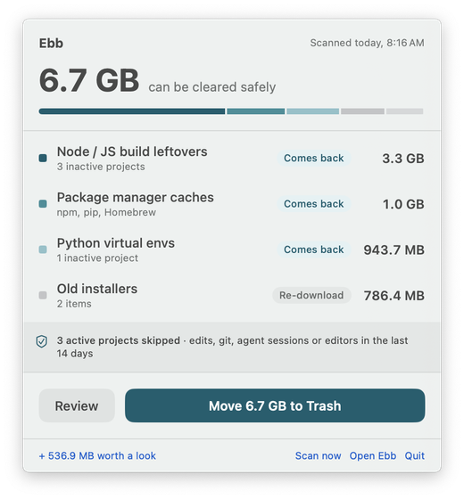
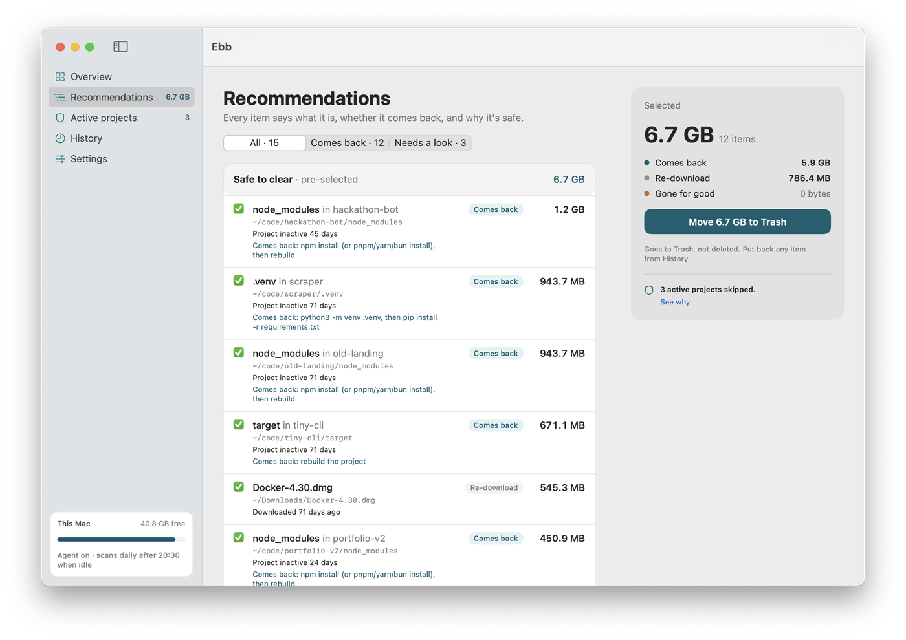
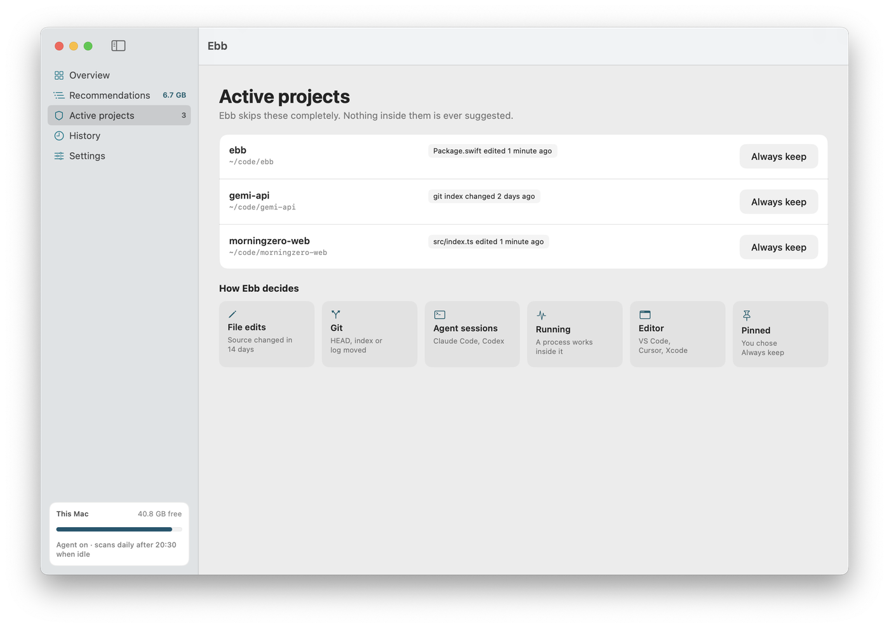
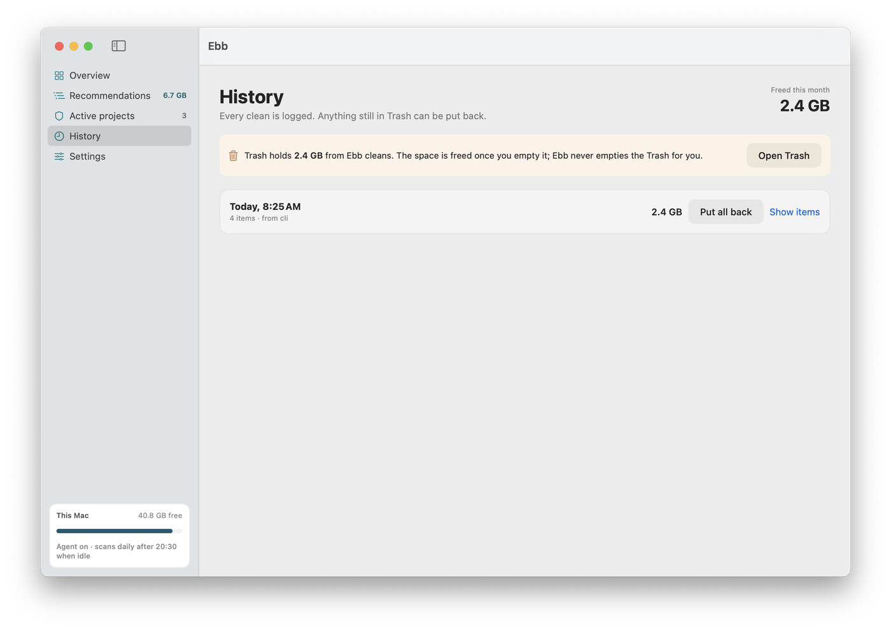

Ebb is a daily cleanup agent for developers' Macs. It finds old node_modules, caches, build output and AI agent history, tells you once a day, and never touches a project you're working on.
$ curl -fsSL https://ebb.serveka.com/install.sh | sh
macOS 14 or later · Apple silicon and Intel · download the zip · build from source

Package managers, build tools, local models and AI agents all leave things behind. General cleaners don't know developer folders, and a single scary "Clean" button isn't something you want near your code.
Scans in the background once a day when your Mac is idle, and notifies you only when there's enough to bother with.
Git, file edits, Claude Code and Codex sessions, running dev servers and editor recents all keep a project off limits.
What it is, how big it is, whether it comes back, and why it's safe. Cleaning goes to the Trash, and you can put it all back.
If any of these is true in the last 14 days (you can choose 7 or 30), Ebb skips the project completely. Nothing inside it is ever suggested.
Source changed, outside build folders.
A commit, checkout or stage.
Claude Code or Codex worked there.
A shell or dev server is inside it now.
Open in VS Code, Cursor or Xcode.
You chose Always keep.
A fixed, documented list. Pre-selected items come back on their own; the rest are listed under "worth a look" and never pre-selected.
| Category | Comes back | Rule |
|---|---|---|
| Node / JS leftovers | Comes back | Project inactive |
| Python virtual envs | Comes back | Project inactive |
| Other build output | Comes back | Project inactive |
| Package caches | Comes back | Always eligible |
| Xcode | Comes back | Project inactive or gone |
| Docker | Comes back | Not used by any container |
| Temp files and old installers | Re-download | 3 / 30 days untouched |
| AI agent history | Gone for good | Older than 30 days |
| Local AI models | Re-download | Not loaded in 30 days |
| Duplicates and Xcode archives | Gone for good | Oldest copy always kept |
Checked by a never-touch test suite that has to pass before every release.
Scans are read-only. Cleaning needs your click and moves to the Trash. Ebb never empties it.
Right before anything moves, Ebb re-checks open files, recent changes and active projects.
.git, .env*, CLAUDE.md, agent settings and credentials, SSH keys, keychains, /System.
Anything changed in the last 24 hours, or open in an app right now, is left out.
A build folder git tracks, an unreadable folder, a zip you made yourself: all skipped.
No account, no telemetry, no network calls. Open source under MIT, so you can check.
Every item says what it is, whether it comes back, and why it's safe.



The same engine as the app, with JSON output for scripts.
ebb works too, unless MacTeX's ebb comes first on your PATH.

Scanning only reads sizes and dates. Cleaning only happens when you click, only moves items to the Trash, and every move is logged so you can put it back. Anything in a project you've touched in the last two weeks is never suggested.
macOS hides parts of ~/Library and some tool folders from apps without it. Without access Ebb still works, but it can't see or vouch for those folders, so it skips them.
Full Disk Access and moving files to the Trash across the disk don't fit the App Store sandbox. Ebb is also not notarized yet. The install script downloads with curl, which macOS doesn't flag, so the app opens normally and its checksum is verified first. If you download the zip in a browser, right-click Ebb and choose Open the first time.
No. The daily agent only scans and, when there's at least 2 GB to clear, sends one notification. Ebb never deletes and never empties the Trash.
Those are cleared with the tool's own command (pnpm store prune, docker builder prune, go clean -modcache). Ebb shows the command and its size, and leaves running it to you.
curl -fsSL https://ebb.serveka.com/install.sh | sh -s -- --uninstall removes the app, the commands and the daily agent. Add --purge to remove settings and history too.
One command, about a minute, nothing changes until you say so.
$ curl -fsSL https://ebb.serveka.com/install.sh | sh